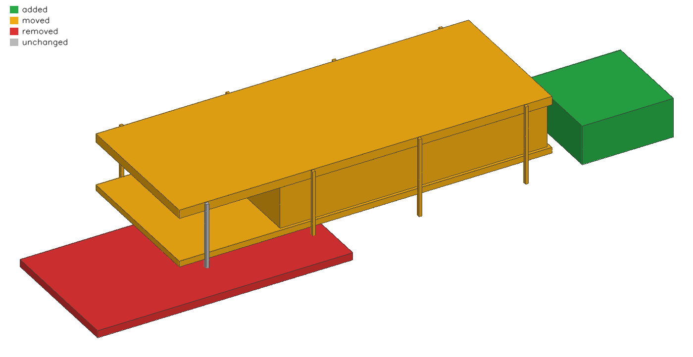

paramgraph keeps a building as named parameters, rules and elements in plain text. Git versions it; the dependency graph explains every change.
$ pg diff house.pg house_edited.pg parameters ~ s 6.706 -> 7.01 (+0.304) ~ W 8.993 -> 9.5 (+0.507), grade D -> A elements ~ col_N[0] moved up to 0.507 m because of W, s ~ col_N[1] moved up to 0.507 m because of W, s ~ col_N_east[2] moved up to 0.608 m because of W, s ~ col_N_east[3] moved up to 0.912 m because of W, s ~ col_S[1] moved up to 0.304 m because of s ~ col_S_east[2] moved up to 0.608 m because of s ~ col_S_east[3] moved up to 0.912 m because of s ~ floor_slab moved up to 0.912 m because of W, s ~ glass moved up to 0.912 m because of W, s ~ roof_slab moved up to 0.912 m because of W, s - terrace x -7.063..9.737, y -2.920..5.938, z 0.429..0.907 + carport x 26.534..32.534, y 0.000..6.000, z 0.000..2.600 checks ~ W 9.500 vs 8.738 : pass -> FAIL ~ L 24.534 vs 23.57 : pass -> FAIL
$ git merge agent == plain git: the edits are on different lines, so it merges silently Auto-merging house.pg merged, nobody looked at the glass wall == git with pg as the merge driver design conflicts box glass: ours changed s, theirs changed g_y; the combination was never seen by either side taken from theirs: param g_y Auto-merging house.pg CONFLICT (content): Merge conflict in house.pg Automatic merge failed; fix conflicts and then commit the result.
